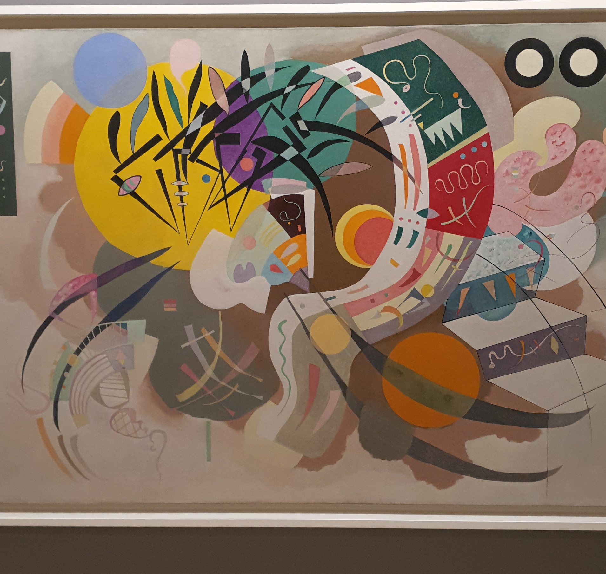
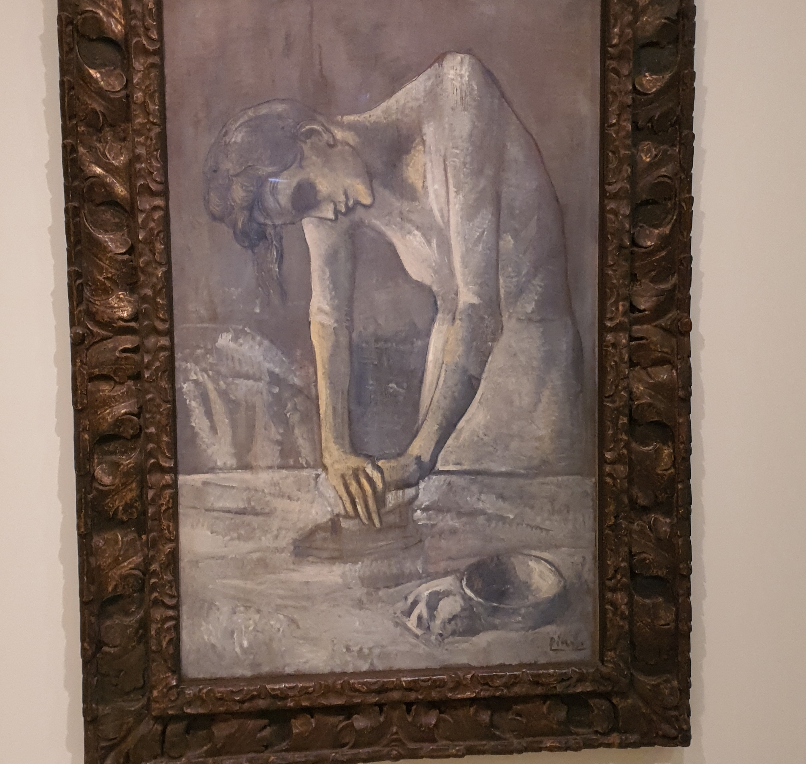

Guggenheim
Progress without pleasure at heart is not progress at all. But pleasure without progress in mind is destructive, deadening, or a bore. - Paul Chan
One of my cognitive limitations is the ability to appreciate artistic work. I find it especially hard to indulge in second order thinking of any art form that I see. I try to over-index on quantitative attributes on anything that I see. I decided to actively work on that by visiting the Guggenheim Mueseum in New York. It is an art lover's paradise.
Once I gave the works that were on display there a few more seconds of my undivided attention, I started to appreciate the efforts that the artist took in creating something. I also started to realize that every painting had a distinct theme and was very artist dependent. I'm going to jot down my thoughts on two key pieces of work that I saw there.
The Florentine
Vasily Kandinski - A Russian artist who had a flair for modern abstract art and used colors pretty generously. Read more about him here. 
The Dominant Curve in the painting reflects hope in postwar times where Germany ended the Bahaus phase(in 1933) which forced him in exile to Paris. Pink embryo probably signifies birth and longevity. Likewise exustence of other life prevail. There are three circles at the top right which I cannot understand the significance of.
Woman Ironing
Pablo Picasso - A Spanish artist who was known to have brought Cubism to modern art. Read more about him here. 
This one took me by attention primarily because I couldn't discern whether the woman in the picture was ironing at peace out of her own free will or out of duty. Not sure what Picasso was trying to convey here. Her slouched posture could indicate relaxation or fatigue. I'm biasing towards the latter.